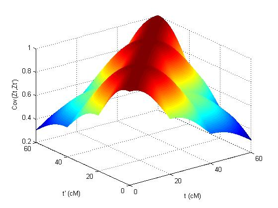
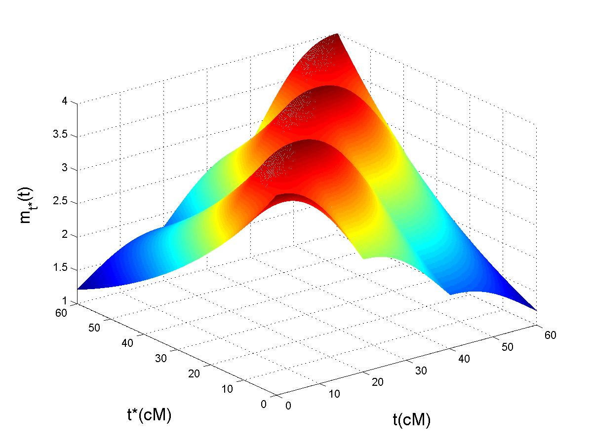

Bonjour a tous
I am assistant professor at University of Angers, in applied mathematics (CNU 26). Previously, I worked as research engineer (not a permanent contract) at IMAG, funded by the Key Initiative Muse Data Science (click also here for more information on KIM). My research was linked to my project "Statistics for pangenomic data" supported by KIM, and also linked to the project "DevOCGen" supported by "region Occitanie". We also organized the workshop "Machine learning for life sciences". Just before, I was postdoc at ISEM and at IMAG, funded by my project "Statistics for pangenomic data" of KIM for which I have been awarded. I work in collaboration with Celine Scornavacca, Fabio Pardi, Vincent Berry, Gilles Didier and Jean-Christophe Glaszmann . I am interested in methodological aspects of phylogenetic networks. As part of the Genome Harvest project (collaboration with CIRAD), I am interested in the evolutionary history of rice and also on the genome mosaic structure of citrus, banana, cocoa, coffee ... Before, I was postdoc at the French National Institute for Agricultural Research (INRA) in Toulouse, working on genomic selection with Brigitte Mangin. I focused on Ridge regression, and its prediction when the number of SNPs (i.e. regressors) is larger than the number of individuals. Previously, I was postdoc in Cecile Ane's lab, working on phylogenetics at the statistics department of the University of Wisconsin-Madison (USA). This area of research covers applied probability, statistics, computer science and biology. I completed my PhD at the Laboratory of Statistics and Probability (LSP) of Paul Sabatier's university, Toulouse. My supervisors were Jean-Marc Azais (LSP) and Jean-Michel Elsen (INRA). The research area of my PhD was on mathematical methods for Quantitative Trait Locus detection. I worked on selective genotyping experiments and also on the empirical process defined by the famous Interval mapping of Lander and Botstein.
My email address
Research interests
Asymptotic Statistics / Mixture models / Statistical Genetics / Gaussian Processes / Chi-Square Processes
Computational Biology / Phylogenetics / Random Trees / Reconciliation between Gene Trees and Species Trees /
High-dimensional data analysis


Reviewer for the following journals
Computational Statistics / Statistics in Medecine / Molecular Biology Evolution / BMC Genomics / Genetics Selection Evolution / Animal Genetics /
Frontiers in Marine Science / Bulletin of the Society of Systematic Biologists / BMC Medical Research Methodology
Fundings
Coordinator with P. Bastide, F-D. Collin, C. Restrepo-Ortiz, S. Tieo
Member
My research on phylogenetic network inference (Montpellier)
In phylogenetics, species tree inference has been studied extensively for many years, and the theory behind it is relatively well known. However, a species tree is unable to model complicated biological events such as horizontal gene transfer (e.g. procaryotes but also among eucaryotes), hybridization (plants and animals, e.g. yeast, wheat, fish), introgression (e.g. rice, citrus, sea bass) and recombination. In contrast, phylogenetic networks, that differ from species tree because of reticulate edges, are able to capture all those phenomenoms. Phylogenetic networks can help providing answers to important questions raised by biologists. For instance, we can infer the domestication process of cultivated rice by comparing different scenarios associated to different networks. Then, it becomes possible for geneticists to reintroduce some wild diversity into cultivars. According to the International Rice Research Institute, improving rice varieties may help in reducing poverty, in dealing with climate change, in protecting the environment, in making rice healthier, and in increasing food security. I am interested in elaborating a new Bayesian method for inferring phylogenetic network. This method relies on a complicated mathematical model, handling Incomplete lineage sorting (ILS) (an important source of discordance between gene trees), a mutation model (a markov process evolving along gene tree branches) ... Our goal is to be able to infer the rice domestication process, with the help of our new sophisticated method. See the webpages dedicated to our simulator SimSnappNet and to the new method SnappNet .
My postdoc On Genomic Selection / High dimensional data analysis (Toulouse)
I was a member of the Applied Mathematics and Computer Science department at INRA and associated to the CropDL project. I worked in collaboration with Brigitte Mangin (statistician), and with a few geneticists interested in different species : Philippe Barre (Raygrass, Lusignan), Gilles Charmet (Wheat, Clermont Ferrand), Jacques David and Muriel Tavaud (Wheat, SupAgro Montpellier). Genomic selection is focused on prediction of breeding values of selection candidates by means of high density of markers. It relies on the assumption that all quantitative trait loci (QTLs) tend to be in strong linkage disequilibrium (LD) with at least one marker. Our main goal was to find out the factors responsible for a good prediction, in a high dimensional setting. The R code for the Plos One paper is available here . See the articles either applied, or theoretical (perfect LD and the preprint imperfect LD) with Simona Grusea . Many questions remain opened for statisticians in Genomic Selection.
My postdoc in Madison, Wisconsin (USA)
I was a member of the stat/math phylogenetic group in Madison. This interdisciplinary group is composed of biologists, statisticians and mathematicians : David Baum, Cécile Ané, Bret Larget, Sebastien Roch and students. The main goal is to propose new statistical methods to reconstruct evolutionary trees. Since more and more data from the genome are available, it becomes more and more interesting to study evolution events responsible for the diversity of genomes. Most of the methods involved in phylogenetics are Bayesian, since we have to deal with a huge parameter space. We analyze thousand of gene families and try to infer the phylogenetic tree for each of these families. Since this work requires a huge amount of computer resources, we work in collaboration with Bill Taylor in order to use the technology offered by HTCondor, the product of years of research by the Center for High Throughput Computing in the Department of Computer Sciences at UW Madison. HTCondor is used by Dreamworks in order to make movies and was also used in the recent discovery of the Higgs boson, a new particle in physics. We are particularly interested in evolutionary events called Whole Genome Duplications (WGD), i.e. an event which creates an organism with additional copies of the entire genome of a species. WGD can be found in bananas, tomatoes, flowering plants ... Download our softwares for reconstructing gene trees and detecting WGD !
My PhD in Toulouse
First, QTL means Quantitative Trait Locus. It is any locus responsible for the variation of a quantitative trait. On this picture, you can see a few plamtrees which come from Lanzarote (Canary Islands). We may wonder why the first palmtree is largely taller than the others. There is maybe a QTL responsible for this particularity. In order to locate the QTL, people scan the genome of the palmtrees and do a statistical test at each position. That is the principle of interval mapping (Lander and Botstein 89). Since a lot of tests are performed on the genome, we are confronting to multiplicity problem. The work of Benjamini and Hochberg (95) on the false discovery rate is a way to deal with this problems of multi testing. Another approach is to study the stochastic process defined by all the correlated tests performed along the genome. I study the asymptotic properties of the corresponding empirical process. The Matlab pictures on the top of this web page gives a summary on the asymptotic properties of the empirical process. On the left, is represented the correlation whereas on the right, is given the mean function of the empirical process, that is to say the signal which contains information about the QTL. On the other hand, genotyping was very expensive in the past. That's why Lebotwitz (1987) proposed to genotype only individuals with extreme phenotypes : it is selective genotyping. I study the asymptotic properties of such a design and study also the empirical process under selective genotyping. Note that selective genotyping is still very useful nowdays, even if thousands of genetic markers are now available. We can increase the signal by genotyping only extreme individuals. Download our softwares to compute the quantiles of the maximum of Gaussian processes and Chi Square processes!
Webdesign service by Sarkis. Outsourcing by FreelanceWebmarket.